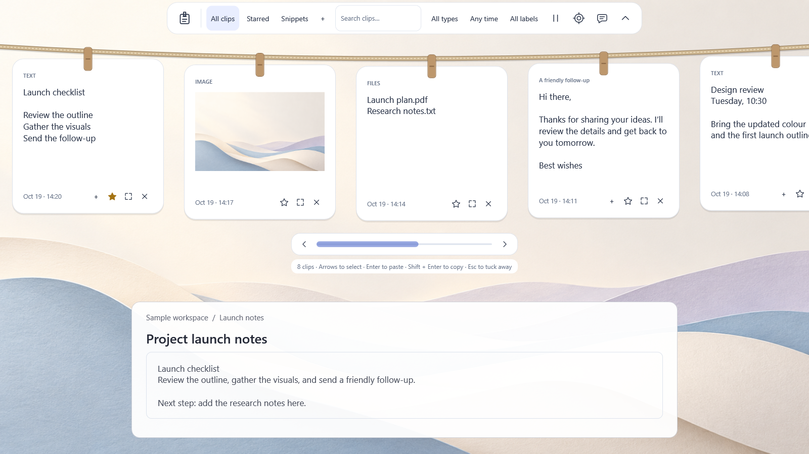

Free. Open source. At home on Windows 11.
Copied it?
Keep it close.
The link you just found. A line worth reusing. That image for your next idea. Clippboard keeps copied text, images and file references on a little rope of paper notes—ready when you need them.
Press Ctrl + Shift + V. Pick a note. Get back to your work.
Try the free beta View in Microsoft Store ↗

01 / FIND
Find the line you copied.
Search saved text and file paths. Use stars, dates and labels to bring the right clip back into view.
02 / REUSE
Write it once. Reuse it.
Keep friendly replies as snippets, combine text and preview transformations before restoring a note.
03 / KEEP LOCAL
Keep it on your PC.
Encrypted local history, optional encrypted backups, and no app account, cloud sync or automatic telemetry.
A few things worth knowing.
- Platform
- Windows 11 x64
- Price
- Free
- Source
- Apache 2.0
- Publisher
- ShardCoders
- History
- Local, encrypted; 1–30 days
- Release
- Public beta
Small questions. Clear answers.
What is Clippboard?
Clippboard is a free, open-source clipboard history manager for Windows 11 x64. It remembers supported text, images and file references while running, then lets you find and restore them with a shortcut.
Does it need an account or upload my clips?
No app account is needed. Clipboard history stays locally encrypted for your Windows user. No cloud sync or automatic clipboard upload is added. Feedback opens GitHub only when requested.
Can I make it feel like my desktop?
Choose from six themes, adjust note sizes and preview appearance changes before saving. Optional Windows OCR needs a compatible installed recognition language. Balanced rendering and adaptive preview work help manage resources; performance varies by PC.
Before you try it
What does it remember?
Unicode text, bounded HTML/RTF, bitmap images and original file locations. File notes require accessible originals; virtual attachments are not supported. Previews remain inert and rich formats depend on the destination.
Which Windows versions?
The beta targets Windows 11 x64. Windows 10 and ARM64 support are not advertised.
How do I share feedback?
Use Help in the app or the repository's bug form. Reports are never sent automatically; review screenshots before sharing them.